Vanilla BuildingsThe vanilla buildings in Kobold Camp are unchanged. They do have the same additions that the Dwarf Mode has, for example specific brewing and milling reactions, pressing more items and new tanning reactions. Gong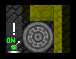 Build labor: Mechanic Skill: Any The Gong can wake up all sleeping kobolds and ends all parties and breaks. This is good to make ready for an attack. Kobolds are startled by the loud sound and get a small, negative thought. Ogre Cave
Build labor: Mason Skill: Animal Armoring The ogre caves allows you to heal, armor and arm ogres. Healing is for free, to simulate your animal caretaker actually doing his job. Ogres are armed with tree trunks, using a wooden log as reagent. Armoring can be done with 5 types of armor, ironbone, lamellar leather, rigid scale/shell/chitin. You can also recycle the battered armors of killed ogres here. Important: Pasture your ogre near the bed before running the reaction. The more ogres the better, since the reaction can fail. For more details search for "boiling rock reaction" in the forum. Simply said, it should work, but if it does not, try again. Paupers Pub
Build labor: Brewer Skill: Playing Music and Fighting Skills The pub is a place to relax and play music. You can play three different songs, each one buffing all nearby kobolds for one month. Banjo - Speed (+25%) Harmonica - Courage (likes fighting) Accordion - Battle (+15% strength, agility and endurance) You can also start brawls in the pub, which trains a variety of fighting skills. All reactions need a normal ingredient that you can find in a bar, like chairs, tables, bottles and more. Scribe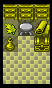 Build labor: Leatherworker Skill: Writing At the scribe you can do three things. 1. Quicksave your game by writing down your Camps history. This is free. 2. Make copies of plans you stole from other civs. This costs leather and dye. More plans means more buildings. 3. You can destroy leftover plans, for example if you stole often from elves, but dont want to build 10 fletcher shops. Toadlicker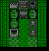 Build labor: Leatherworker Skill: Brewing Kobolds can use extract from psychotropic toads in this workshop. First you need to milk the toad, a kobold will skim of the secrete of the toads skin. With the full bucket you can now run two reactions: 1. Make shots: Produces 10 drinks that affect kobolds. 2. Inhale directly: Affects only the worker. The affect has 50 different outcomes, with a 7% chance each. Attributes can double or be halfed, transformation into harmless or powerful creatures, slow or speed, immunite or sickness... on average a kobold is affected by 3,5 syndromes at a time. You can affect the same bold as many times as you want. Some effects you can see, but most of them are invisible to the user. Kobolds might be immune to stun, never need to sleep and are twice stronger, without you knowing. Which is of course part of the fun. The effect will last for half a year. Trader Warren
Build labor: Mason Skill: Any The Trader Warren acts like the Trade Warehouse from Dwarf Mode. You Kobolds can unpack traded crates in this building, as well as golden bags of loot that you might gain from killing rival tribe members. All reactions are triggered automaticaly, as soon as you have the crate/bag it will be unpacked. Tribal Meeting Ground
Build labor: Diplomacy Skill: Diplomacy You can invite migrants, caravans and diplomats with this building, as well as sieges and megabeasts. The bigger your camp the higher the chance of success. If you try to force an event and nothing happens, your camp is not important enough. Wait one season and try again. Inviting migrants, diplomats and caravans costs 1000 gold coins. Challenging a race or beast costs nothing. Painters Studio
Build labor: Leatherworker Skill: Runesmithing The Painters Studio can make paint and color furniture. You can use plant dye to make 5 units of paint, which is enough to color 5 pieces of furniture. The furniture will take on the material of the paint, so a wooden chair will be more valuable afterwards, but a golden throne wont be. Take care which items you want to color. You have all ten dyes available for this. Warpainters Studio
Build labor: Leatherworker Skill: Runesmithing The Warpainter can add terrifying decorations on any leather armor. You have 10 different dyes to select from, with 10 different effects. The kobold wearing painted armor will gain a slight boost. You can even mix paints and add several different dyes to the same armor. 1. Cochineal hives => Carmine dye => 10% speed 2. Silver Barb => Black dye => No pain 3. Hide Root => Brown dye => No exert 4. Dimple Cup => Blue dye => No emotion 5. Blade Weed => Emerald dye => No paralyze 6. Indigo Flower => Indigo dye => No stun 7. Bloomberry => Scarlet dye => No fear 8. Plump Helmet => Purple dye => 10% Toughness 9. Sunberry => Yellow dye => 10% Agility 10. Muck Root => White dye => 10% Recuperation/Healing Notes: No emotion makes the Kobold immune to tantruming, and no fear is great for siege operators, since they wont run away from enemies anymore. WorkshopsBone Chipper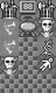 Build labor: Bonecarver Skill: Bonecarver A workshop that upgrades bone to bonerattle, an armor-material that fools undeads into thinking that you are one of them. You can make bone armors and armorsets here, or upgrade and make bonerattle armor and armorsets. Keep in mind that every reaction uses up an entire stack of bones, so it is more economical to use the craftsbold for the bone armor. Once upgraded to bonerattle the reactions work normally, using one item for each product. Chitin Scrapper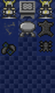 Build labor: Leatherworker Skill: Leatherworker A simple workshop that allows the production of chitin armors. An armorset consists of 2 shin-guards, 2 wrist-guards, greaves, a cap and a suit of armor. Everything else, like weapons and shields, you have to create yourself. Cloth Cutter
Build labor: Tailor Skill: Weaving & Tailoring A simple workshop that allows the production of specific clothing types. A set consists of 2 shoes, a shirt and pants. You can choose between wool, cotton, silk and rare silk. You can also unravel cloth back to thread, if need be. Dirt Digger
Build labor: Archeologist Skill: Archeology The dirt digger can sift through sand or rock to find earthenware and clay crafts, maybe the odd obsidian weapon of old. It can also identify and restore the rare fossils a kobold might find encased in a cavern wall. Leather Trimmer
Build labor: Leatherworker Skill: Leatherworking A simple workshop that allows the production of leather armors. An armorset consists of 2 shin-guards, 2 wrist-guards, greaves, a cap and a suit of armor. Everything else, like weapons and shields, you have to create yourself. Leather Upholstery
Build labor: Leatherworker Skill: Leatherworking A simple workshop that allows the production of leather furniture. Doors, chairs, beds, blocks, the usual interior items, all done from normal leather. Scale Cleaner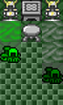 Build labor: Leatherworker Skill: Leatherworker A simple workshop that allows the production of scale armors. An armorset consists of 2 shin-guards, 2 wrist-guards, greaves, a cap and a suit of armor. Everything else, like weapons and shields, you have to create yourself. Shell Crafter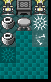 Build labor: Leatherworker Skill: Leatherworker A simple workshop that allows the production of shell armors. An armorset consists of 2 shin-guards, 2 wrist-guards, greaves, a cap and a suit of armor. Everything else, like weapons and shields, you have to create yourself. Wicker Weaver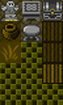 Build labor: Herbalism Skill: Herbalism Allows five kinds of plants to be bundled into wicker bales, with 2 plants used for one bale. These are used to create blocks for constructions or for furniture. For stockpiling reasons they are treated as stone. Bales are counted as tools, which means that your wicker bales can be found in stone tool stockpiles. Wicker bins are very light, keeping kobolds at a fast speed. Trap Setter
Build labor: Mechanic Skill: Mechanic The trap setter creates early traps made of mostly bone, wood or skull materials. Whips of rope or leather are also possible. Kobolds can also create shrapnel traps. These need 2 stacks of bones to be made, but hit 4 times with each attack. Woodcarver
Build labor: Woodcrafting Skill: Woodcrafting A simple workshop that produces items of wood. Think of it as a carpentry for items the vanilla carpenter cant produce. Slabs, mechanisms, querns, millstones as well as batches of furniture can be done here, so can wooden braziers and candelabras. FarmingBoneyard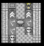 Build labor: Bonecarver Skill: Bonecarve The boneyard allows the creation of furniture from bones. You can also make firesafe blocks here, one of the few places that you can. Keep in mind that every reaction uses one entire stack of bones. You can also create bonestuds from different sources, like remains, bone, horn or hoof. Booze Burner
Build labor: Brewer Skill: Brewing Since kobolds get negative effects from drinking hard liquor, they devised another use for it. In the booze burner you can produce clean drinking water from booze, or make fuel. It is a lot more efficient to make fuel from booze and oil, then taking pure alcohol. Critter Kitchen
Build labor: Cook Skill: Cooking A very specific little kitchen that helps producing meat for your kobolds. You can cook live vermin into 4 units of meat, or take the remains of vermin and cook it into one unit of meat. And thats about it. Meat-only cooking classes. If you have enough food already, you can also decide to burn remains or bones to bonemeal, which is a flux. Juice Bar
Build labor: Brewer Skill: Brewing You can brew juices and tea in this workshop. The reactions are similar to brewing alcohol, but the drink will have no negative effect. Juices and Tea are stored in barrels and will end up in your drink stockpile. Tea even has positive effect, but costs one unit of fuel to boil the water first. Tea adds nosleep for a short time. Juices raise recuperation for a short time. Fishpond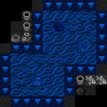 Build labor: Mason Skill: Fish Farming Make fishing poles or nets, from wood, thread and blocks used as weight. Use those, or a bucket, to fish from the pond. The bucket hast the least success chance, pole a better one, using nets has the highest outcome.. You will get fish meat which has to be brought to a fish cleaner. You might also collect live animals for aquariums. Poison Cookery
Build labor: Wax/Poison Worker Skill: Wax/Poison Working The poison cookery can make 2 poisons, slowpoke and swamp fever. Both can be applied to blowdarts, which makes a great first defense. Note that none of the poisons are lethal, and blowdarts dont do much damage. Use this as a support ranged squad for your melee fighter or another bola/sling squad. Swamp Fever causes enemies to cough blood, get a fever, get a little bit sluggish. It is made from any one plant, oil and tallow. Slowpoke causes enemies to slow down a lot. It is made from Kobold Bulb and tallow. Both poisons are stored in barrels, and you will get 3 barrels of poison for each reaction. To make the reaction a lot easier, you can also directly make poisoned blowdarts, from either bone or wood. This will result in a stack of 50 already poisoned darts, ready to be used. Sawmill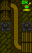 Build labor: Woodcutter Skill:Woodcutter The sawmill can cut wood into planks. One log creates four planks, which is great for constructions, although you cant use planks for furniture anymore. You can also smooth your rough timber to increase the value. The sawmill can also split wood logs into scrapwood logs. This double your wood amount, but reduces the value to 0. Wood Processor
Build labor: Woodcutter Skill: Woodcutter The wood processor is a rather important building. You can strip woodstalks for wood, with a ratio of four to one. Four woodstalks give you one wooden log. Cutting dug up gnarled roots also give one wooden log. You can polish smoothed wood with oil to further increase the value. Using sawdust and glue you can create plywood logs. You can break down any wooden item here to get back some scrapwood logs. These have a value of 0, but can be used just like any other wood, for fuel for example. TrainingTrap Parcour
Build labor: Architect Skill: Fighting and Doging skills Use this parcour to train your kobolds general skills, like throwing, dodging and coordination, as well as armor and shield. You need either a trap component or a shield/armor for these reactions. The items have a 5% chance of breaking. Training Room
Build labor: Architect Skill:Weapon and armor skills The training room allows melee combat training, as well as any weapon skill. You need one training weapon of the type, and you have a 5% chance to break it while training. Archery Range
Build labor: Architect Skill:Ranged weapon skills You can train any ranged weapon skill here. You need one weapon of the type, or any ammo to train general ranged skill. The weapon has a 95% return rate, so it might happen that it breaks on training. Surgical Theater
Build labor: Architect Skill: All medical skills You can train medical skills here. You will need different ingredients for this. Cloth for wound dressing, thread for suturing, corpses for diagnostics and remains for surgery. All very straightforward. ThieveryThieves Tunnel
Build labor: Architect Skill: Sneaking/Hunter In the thieves tunnel you can send kobolds to steal items. These simple thieving trips spawn a single item with a very low chance, but are great to help in case of moods. You should also send your kobolds to steal the plan for an even better thieves tunnel. Secret Thieves Tunnel
Build labor: Architect Skill: Sneaking/Hunter ***Plan stolen in a Thieves Tunnel Reaction*** With this tunnel you can send kobold to steal from other civs. You can run these reactions every time, regardless of the civ actually being present in worldgen or not. You will need a pouch and a thieves cloak for this, which can be produced in several workshops, from leather, cloth or even metal. Stealing has a small chance of death, an even smaller chance of starting a siege, and a small chance of the next greater plan for the super secret thieves tunnel. Each different civ gives different rewards, which are indicated in the reaction name. A 3% chance for a building plan for each race is also included. Stealing from dwarves or drow is your only source of picks. Super Secret Thieves Tunnel
Build labor: Architect Skill: Sneaking/Hunter ***Plan stolen in any Secret Thieves Tunnel Reaction (3% chance)*** This tunnel works exactly like the last one, but with greater risks and greater rewards. Generally speaking you might get 2-3 times as many items and you have a 50% chance for a building plan, but the chance to trigger a siege is way higher. Stolen TechAltar of Griblin the Lucky
Build labor: Praying Skill: Praying / Believer of Griblin ***Plan stolen from Kobolds*** A basic religious building in the style of Masterwork DF temples. You can pray to your saint here, or sacrifice an item to recieve a somewhat random gift. You can sacrifice leather for a random armor your civ can produce, wood for a random weapon your civ can produce, or a selection of 5 items that will give you a truly random item of a selection of over 100 types. You might even end up with a leather weapon or a plant armor. Arena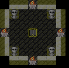 Build labor: Leatherworker Skill: Trapping ***Plan stolen from Goblins*** The arena allows to fight 8 different creatures for different rewards. You start with a Grimeling, and after you killed it you will get a reward and a token to enable to next-harder fight. The last boss of the arena is a Balrog. The summon a creature you need to pasture a changeling on the Arena, so dont waste your arena tokens on reactions if you dont have changelings to transform. You can buy them at embark, order them from caravans, or mutate pets into changelings in the Warpstone Shrine. Arena lvl 1: Fight: Grimeling Reward: Wood/Plants Arena lvl 2: Fight: Giant Desert Scorpion Reward: Bloodsteel Spike Arena lvl 3: Fight: Blizzard Man Reward: Large Sapphire Arena lvl 4: Fight: Dragon Raptor Reward: 2 dragonscales Arena lvl 5: Fight: Green devourer Reward: 1 greenglass helm, 4 greenglass spikes Arena lvl 6: Fight: Deep One Reward: 30 Netherhorror Poison Arena lvl 7: Fight: Umber Hulk Reward: 1 Giant Strength Potion Arena lvl 8: Fight: Balrog Reward: 1 volcanic sword, 1 volcanic whip Ashlander Kennels
Build labor: Leatherworker Skill: Animal Armoring ***Plan stolen from Ashlander Elves*** Ashlander kennels can train creatures in a different way then ordinary kennels. A trained creature is more powerful and sturdy then a normal one and gets a 3x bonus on all attributes. You can also try to heal creatures here, using thread and splints. Casino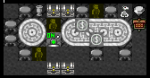 Build labor: Leatherworker Skill: Bookkeeping ***Plan stolen from Human Bandits*** The casino is the place to change copper, silver or gold for wooden casino chips. You can gamble by playing poker, roulette or dice. The wooden chips that you win can be exchanged back for copper, silver or gold, or for goods the bandits bring, like food, weapons or a random prize. Ceremonial Grounds
Build labor: Leatherworker Skill: Sorcery ***Plan stolen from Orcs*** The ceremonial grounds enable your kobolds to do ritualistic dances and ceremonies. You can grow all saplings to trees, regrow all grass, or change the weather to clear skies, rain or snow. Note that rain and snow are great to stop brushfires on the surface. Fletchers Shop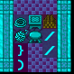 Build labor: Leatherworker Skill: Bowyer ***Plan stolen from Elves*** The fletcher can produce the best ranged weapons available to your civ: Bows and compound bows. You need wood and thread to build them. Fitting to the bows you can make arrows here. You can chose a material and one of three types: Pointy, Sharp and Blunt. The materials are wood, rock or metal. Be sure to use stockpile feeding to select the metal you want. Pointy arrows => Piercing damage, like a spear. (piercing arrow) Sharp => Cutting damage, like a sword. (broadhead arrow) Blunt => Blunt damage, like a hammer. (hammerhead arrow) Honeyant Farm
Build labor: Hivekeeping Skill: Hivekeeping ***Plan stolen from Antmen*** The honeyant farm is a giant hive that uses plants or meat as reagents to produce more honeyants. These can be farmed for their name-giving honey, or simply for chitin. 1 plant => 2 honey. 2 plants => 1 tanned chitin. 1 meat => 2 honey. 2 meat => 1 tanned chitin. Ice Sculptor
Build labor: Leatherworker Skill: Masonry ***Plan stolen from Frost Giants*** The Ice Sculptor uses ice boulders to make a multitude of different items. It works a bit like the MDF Stonecutter, Rockforge and Furniture Shop combined. Ice palace, here I come. The prices range from 1-5 ice boulders for any given product. Mostly its just 1. Keep in mind that items made of ice will melt whenever ice would usually melt, so this is only a good idea in cold biomes. But on glaciers this is an unlimited resource for your camp. Poisoners Lab
Build labor: Leatherworker Skill: Wax/Poison Working ***Plan stolen from Deep Drow*** Coat weapons, ammo or traps components with poisons. These coatings are waterproof and each item can be coated with each poison. You can take any weapon, any trapcomp and any stack of ammo size 25 or bigger. You can use any poison/venom that you can buy from caravans or take at embark. Whenever you hit an enemy the syndrome comes into effect. In addition you can also make 6 plant based poisons of your own. Bitterroot Poison: Paralyzes the enemy for a short duration. Good for melee and traps. Aboveground plant, can be bought or gathered. Shadowleaf Poison: Slows the enemy down. Good for melee. Underground cavern 1 plant, can be bought or gathered. Greenskin Bane: Slows down orcs and goblins and adds a multitude of negative effects, like dizzyness, pain, coughing of blood. Good for weapons, traps and ammo, but only works on greenskins. You will need a colony of banespiders to harvest this poison, your hivekeeper can farm them just like bees. Everdream: Targets fall asleep after a while. Good for archers and traps. Is made from the Insomnium plant, you can get these only by trading with/raiding from elves. Voodoo poison: Target becomes opposed to life and attacks anything living around him. Excellent for archers and traps. Is made from the zombie flower, you can get these only by trading with/raiding from drow. Nether Horror: Turns the target into an infernal spider demon. How useful that is is for you to decide. Of course they are great to kill other enemies, but then again you still have spider demons coming for you. Is made from nether creeper. WARNING: This feature needs dfhack to be active. Shroomshop
Build labor: Farmer Skill: Farmer ***Plan stolen from Drow*** The shroomshop converts seeds or plants into other seeds or plants. Its that simple. You can take any 2 plants and make 1 standard underground shroom spawns. You can take any 3 seeds and make 1 special plant that you cannot find in the wild. These are the 5 special trade-plants from elves and the 5 special trade-plants from drow. These are the same as in Dwarf Mode and you can make special potions with positive effect, or poisons with them. Steam Generator
Build labor: Machine Operator Skill: Machine Operating ***Plan stolen from Automatons*** This workshop is a copy of the Steam Engine from Dwarf Mode and produces power. It works the same way, which means you still need water underneath the workshop. The only difference it that you dont need fuel to run it, it is essentially free power for your machinery. Tattoo Parlor
Build labor: Leatherworker Skill: Runesmithing ***Plan stolen from Humans*** The tattoo parlor can use any of 10 dyes to make henna. This henna powder is used to tattoo a kobold. Being tattooed is considered a great honor and part of the initiation into the tribe. Every tattooed kobold will have a "(tattooed)" behind his name and gets a 30% boost on strength, toughness, agility, endurance and recuperation. This is a essential upgrade, so be sure to slowly convert all your kobolds into full tribe members with a nice tattoo. Henna slowly fades and lasts about 1 year, after which the bonus is lost. You can re-tattoo whenever you like. Voodoo Totem
Build labor: Leatherworker Skill: Sorcery ***Plan stolen from Warlocks*** The voodoo totem uses warlock loot, which can be gained by killing warlocks or stealing from their civ. You can sacrifice 10 of them for 3 possible curses: 1. Raise all dead => What it says on the lid. Hint: Undeads are unfriendly. 2. Curse a race => Spawns magma on every civ member of the race. Hint: That slowly kills them. And starts fires. And melts stuff. 3. Curse your own camp => Essentially a self-destruct lever, it will kill everyone inside the camp. Hint: You will lose the game if you do this. Pro-Tip: Remember the hints. All curses have a camp-wide negative effect: All negative thoughts are doubled. So if a kobold would get unhappy about stale water, he will get twice as unhappy about it now. This effect adds up, the more curses you use, to heavier is the penalty on unhappy thoughts. Sooner or later your camp will start a tantrum spiral if you abuse this dark magic too much. DecorationsDisplay Stand
Build labor: Mason Skill: None This building is decorational and has no reactions. It is only used to store specific items. One of the build materials can be anything you have, so take your valuable but useless artefacts and put them in a display stand in the dining room, for all to marvel at. Dungeon Deco
Build labor: Any Skill: None These buildings are decorational and have no reactions. Potted Plants
Build labor: Herbalist / Plant Gathering Skill: None These buildings are decorational and have no reactions. Fountain
Build labor: Architect Skill: Any skill This building is decorational and has only one reaction. You can make kobolds swim in the fountain, training their swimming skill. Since the introduction of ramps on rivers and pools this is not as important as before.  |